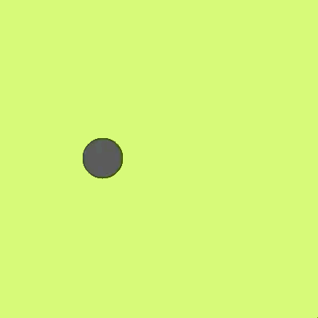
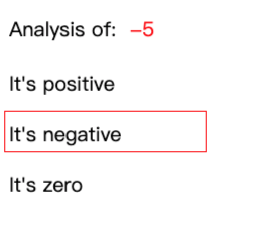
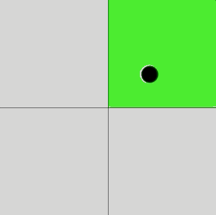
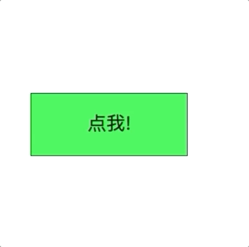
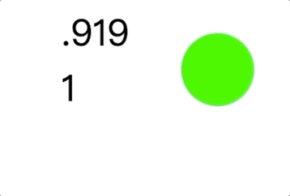
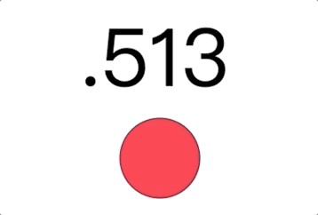
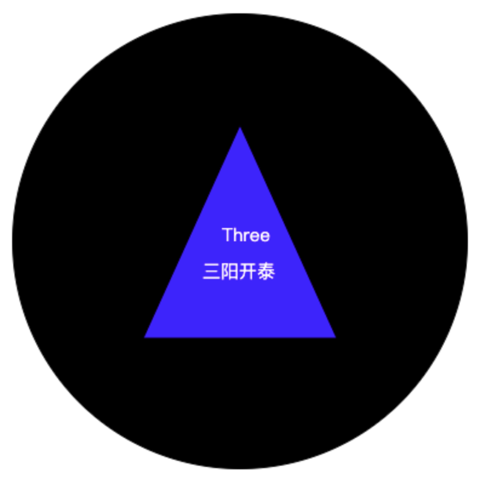

Example code: Bouncy ball 弹来弹去

if(condition){code to run}
这样，我们就可以通过判断条件是否满足，来执行不同的代码～～
// Logic: if statement 逻辑判断：球往哪边动？
if(x > 375){
speed = -5;
}
if(x < 25){
speed = 5;
}
// Move the ball 球动每一步
x = x + speed;mouseIsPressed ProcessingJS provides it to check if mouse is pressed. 由ProcessingJS提供的判断，判断鼠标摁键是否被摁下
Mouse Interaction: mouseIsPressed 判断鼠标是否被摁
if (mouseIsPressed) {
ellipse(mouseX, mouseY, 50, 50);
}Use mouseIsPressed to paint it:
Every condition is a comparison, which can be written as a boolean expression, and will be evaluated as a Boolean. 每个条件其实就是一个判断，它写成的式子叫布尔表达式，然后布尔表达式得出一个值，叫布尔值。
判断、比较 comparison、条件 condition，这三其实是一回事，举例：
代码执不执行呢？
就是用语法 if( 条件 ){ 代码 } 来做判断：
Example code: Booleans 布尔值：判断的真假
println("1. " + true); // boolean 布尔值
println("2. " + false); // boolean 布尔值
// Boolean expression 布尔表达式
println("3. " + (number <= 48)); // less than or equal 小于等于
println("4. " + (number >= 48)); // greater than or equal 大于等于
println("5. " + (number === 48)); // equal 等于
println("6. " + (number !== 48)); // not equal 不等于
println("7. " + (48 < number)); // less than 小于
println("8. " + (number + 30 > 48)); // expression evaluation 大于The 3rd data type we've learned so far. The two that we already grasped are: Number and String. 布尔值：这是我们学到的第三种数据类型。回顾一下，前面我们已经学过数值、和字符串。
判断（比较）数字是大于0呢？小于0呢？还是等于0？

&&：Need all conditions are true simultaneously，需要所有条件都是真||：At least one comparison is true，至少有一个条件满足Example code: Color Area and Edge Detector 点亮彩色区域和撞线||

// Area detector
if (mouseX < 200 && mouseY < 200) {
fill(242, 22, 59);
rect(0, 0, 200, 200); // top left
}
...
// Edges detector
if (abs(mouseX - 200) < 10 || abs(mouseY - 200) < 10 || mouseX < 10 || mouseX > 390 || mouseY < 10 || mouseY > 390) {
fill(255, 255, 255);
textSize(30);
text("EDGE BALL!", 115, 195);
}About absolute value 绝对值求距离 “∣x∣表示x轴上的点 x 到原点的距离”

// mouse click detector
if (mouseIsPressed && mouseX >= 50 && mouseX <= 300 && mouseY >= 150 && mouseY <=250) {
fill(33, 112, 52); // click color of button
showMonster();
}random(start, end)round(number)ceil(number)floor(number)Example code: 随机 random, 圆整 round, 天花板 ceil, 地板 floor
var number = random(0, 10); // 随机
println(number);
var number1 = round(10.1); // 圆整
println(number1);
var number2 = round(10.9);
println(number2);
var number3 = ceil(10.1); // 天花板
println(number3);
var number4 = ceil(-10.1);
println(number4);
var number5 = floor(10.1); // 地板
println(number5);
var number6 = floor(-10.1);
println(number6);There are only 2 possibilities. 仅有两种可能，非此即彼
Example code: 0 Red vs. 1 Green

// Draw the circle
if (integer === 0) {
fill(255, 0, 68);
}
else {
fill(9, 255, 0);
}
noStroke();
ellipse(300, 99, 100, 100);There are more than 2 possibilities. 3种（包括3种）以上的可能
Example code: if / else if / else

// generate a random number between 0 and 1
var number = random(0, 3);
...
// set the coin color
if (number < 1) {
fill(255, 0, 64);
}
else if (number < 2) {
fill(0, 255, 26);
}
else if (number < 3) {
fill(255, 247, 0);
}
// Get a random integer
var answer = floor(random(1, 5));
...
// Run code under different conditions
if (answer === 1) {
text("一帆风顺", 169, 230);
text("One", 185, 200);
}
else if (answer === 2) {
text("双喜临门", 169, 230);
text("Two", 185, 200);
}
else if (answer === 3) {
text("三阳开泰", 169, 230);
text("Three", 185, 200);
}
else {
text("四季花开", 169, 230);
text("Four", 185, 200);
}